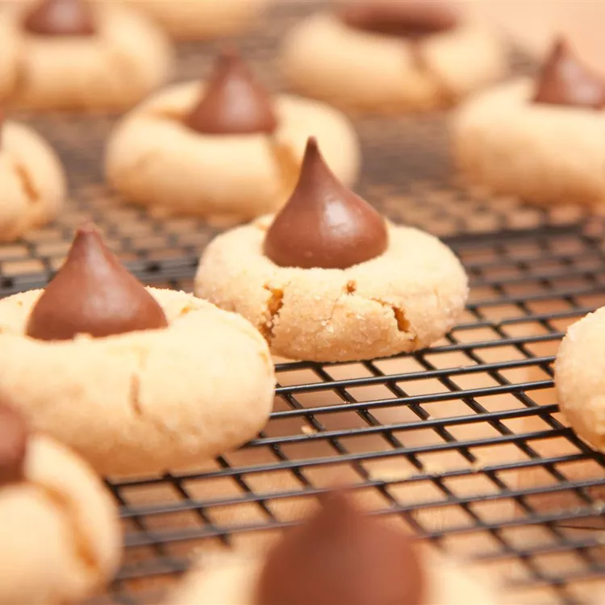

Peanut Butter Kiss Cookies

Description:
This peanut butter kiss cookie recipe, with its four ingredients and irresistible results, almost seems too good to be true. But trust us: These decadent and easy peanut butter cookies with Hershey's Kisses are very, very real.
Ingredients:
- 1 cup white sugar
- 1 cup creamy peanut butter
- 1 large egg
- 18 milk chocolate candy kisses, unwrapped
Steps:
- Gather all ingredients. Preheat the oven to 350 degrees F (175 degrees C).
- Stir sugar, peanut butter, and egg together in a mixing bowl until well combined.
- Shape dough into 1-inch balls. If dough is too sticky, refrigerate until easy to handle, about 30 minutes.
- Place dough balls on an ungreased cookie sheet.
- Bake in the preheated oven until edges are set, about 10 minutes.
- Press a chocolate kiss into the center of each warm cookie. Remove to a wire rack to cool.
- Enjoy!